[5-2] 对射式红外传感器计次 / 旋转编码器计次 — 学习笔记
素材 / 字幕情况
- 课程：江协科技《STM32入门教程-2023版 细致讲解 中文字幕》
- 视频：BV1th411z7sn?p=12，49:31
- 素材：248 帧关键帧（每 12 秒，宽 1280px）+ PP-OCRv4 画面硬字幕 OCR（705 段）；关键截图 16 张随笔记收录（源图在
vidsum_out/stm32_p12/frames/，站内图片在assets/images/stm32-12/） - 字幕情况：该集 B 站没有 CC/AI 字幕，文本由画面烧录的中文字幕 OCR 得到（source=subtitle-ocr），偶有错字已按画面校正。
- 前情：中断概念、NVIC 优先级分组、EXTI 内部结构等理论部分见 [5-1] EXTI外部中断，本集是外部中断的代码实现课，理论只做一句话带过。
一句话结论
这一集是中断部分的程序课：先用「对射式红外传感器计次」把外部中断的完整配置链路（RCC → GPIO → AFIO → EXTI → NVIC）和中断服务函数走一遍，用 OLED 显示中断次数；再用「旋转编码器计次」练习 AB 相正交信号——A、B 两相都触发中断，在中断里读另一相电平判断正反转，从而对变量加减；最后总结两条中断编程建议：中断函数要短、中断和主程序不要操作同一硬件。
0. 本集的两个工程（概览）
| 工程 | 硬件 | 现象 |
|---|---|---|
5-1 对射式红外传感器计次 |
对射式红外传感器模块（VCC/GND + DO 接 PB14）+ OLED 显示屏（电路与上一节相同） | 挡光片经过传感器槽口 → DO 电平跳变触发外部中断 → 中断里计数变量 ++，主循环用 OLED 显示 Count:00000 并逐次加 1 |
5-2 旋转编码器计次 |
旋转编码器模块（VCC/GND + A 相接 PB0、B 相接 PB1）+ OLED 显示屏 | 向右转编码器 Num 增加，向左转 Num 减小（OLED 显示带符号数，如 Num:+00012） |
两个工程都是在上一节 [4-2] OLED显示屏 的工程（4-1 OLED显示屏）基础上复制改名，然后在 Hardware 组里新建自己的模块文件（CountSensor.c/h、Encoder.c/h）。
1. 工程 1：对射式红外传感器计次的接线与思路
- 右上角 OLED 部分与上一节「OLED 显示屏」的电路完全一样，先插好用于显示程序现象。
- 左下角接一个对射式红外传感器模块，接线只有 3 根：VCC、GND 分别接电源正负极，DO（数字输出）随意选一个 GPIO，视频里接到了 PB14。
- 当挡光片（或编码盘）从传感器槽口经过时，DO 就会输出电平跳变的信号；这个跳变信号触发 STM32 PB14 的外部中断，在中断函数里执行变量 ++，主循环里再调用 OLED 显示这个变量——第一个程序就完成了。
- 实物用 3 根公对母杜邦线把模块引脚引出来：VCC 接电源正、GND 接电源负、DO 接 PB14；用挡光片挡一下槽口，模块上的输出指示灯会跟随亮灭，说明高低电平输出没问题。
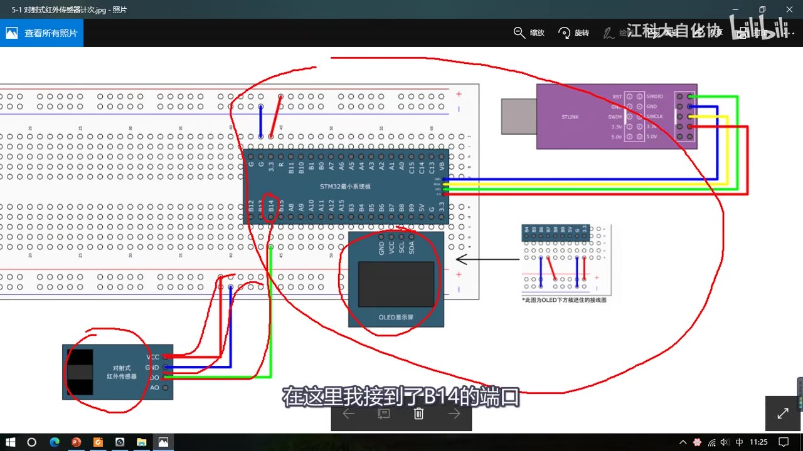
图 1：5-1 对射式红外传感器计次接线图——对射式红外传感器模块 VCC/GND 接电源、DO 接 PB14，右上角为 OLED 电路
2. EXTI 外部中断的配置五步
视频先回到 PPT 的「EXTI 基本结构」图，把外部中断从 GPIO 到 NVIC 这一路的信号链过了一遍，然后总结出配置五步——原则就是：把从 GPIO 到 NVIC 这一路中出现的外设模块都配置好，把信号电路打通。
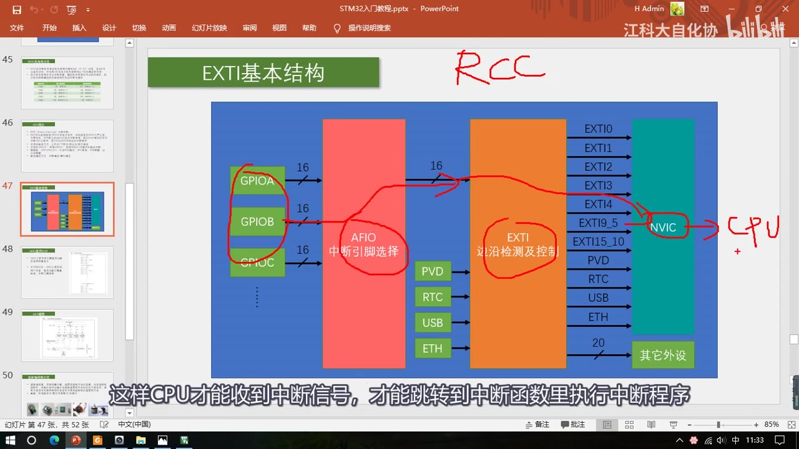
图 2：PPT「EXTI 基本结构」——GPIO → AFIO（中断引脚选择）→ EXTI（边沿检测及控制）→ NVIC → CPU，红笔标出本次要打通的一路信号
- 配置 RCC：把涉及的外设时钟都打开（不开时钟外设没法工作）；
- 配置 GPIO：把端口设为输入模式（外部中断引脚选浮空输入/上拉输入/下拉输入之一）；
- 配置 AFIO：选择用哪一路 GPIO 连接到后面的 EXTI（
GPIO_EXTILineConfig）； - 配置 EXTI：选择边沿触发方式（上升沿/下降沿/双边沿）和响应方式（中断响应/事件响应，一般用中断）；
- 配置 NVIC：给这个中断选择一个合适的优先级，中断信号才能进入 CPU、跳转到中断函数。
涉及的外设有 RCC、GPIO、AFIO、EXTI、NVIC 五个，看起来多，但一个外设一个外设配下来并不复杂。
2.1 第一步：RCC 开启时钟
RCC_APB2PeriphClockCmd(RCC_APB2Periph_GPIOB, ENABLE); // 开启 GPIOB 时钟
RCC_APB2PeriphClockCmd(RCC_APB2Periph_AFIO, ENABLE); // 开启 AFIO 时钟
- GPIOB 和 AFIO 都是 APB2 上的外设，所以要用 APB2 的开启时钟函数、配
RCC_APB2Periph_*参数，两者要对应（写成 APB1/AHB 的宏语法上不报错，但运行时外设不工作）。 - 不确定某个外设接在哪个总线上时，可以跳转到
RCC_APB2PeriphClockCmd的定义看参数列表，列表里有就说明是这个总线上的外设。 - EXTI 和 NVIC 不需要开启时钟：NVIC 是内核外设（跟 CPU 一起，RCC 管不着）；EXTI 作为独立外设按理该有时钟，但寄存器里没有 EXTI 时钟控制位，原因视频里也没找到确切答案（推测和 EXTI 唤醒有关），知道不用开就行了。
2.2 第二步：GPIO 配置为上拉输入
GPIO_InitTypeDef GPIO_InitStructure;
GPIO_InitStructure.GPIO_Mode = GPIO_Mode_IPU; // 上拉输入（默认高电平）
GPIO_InitStructure.GPIO_Pin = GPIO_Pin_14; // PB14
GPIO_InitStructure.GPIO_Speed = GPIO_Speed_50MHz; // 输入模式下不重要，填 50MHz
GPIO_Init(GPIOB, &GPIO_InitStructure);
- 对于外部中断引脚，GPIO_Mode 要选浮空输入、上拉输入或下拉输入其中之一（参考手册 GPIO 章的「外设 GPIO 配置表」里，EXTI 输入线给的推荐配置就是浮空/上拉/下拉）。
- 本集选
GPIO_Mode_IPU上拉输入，即默认高电平的输入方式。
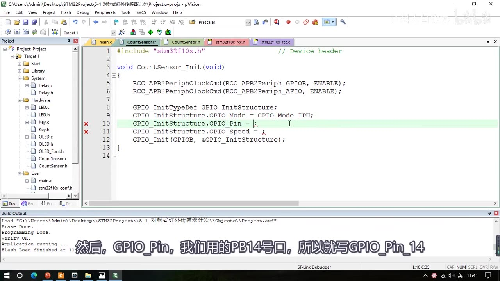
图 3：GPIO 配置代码——GPIOB 时钟、GPIO_Mode_IPU 上拉输入，GPIO_Pin 正在填 GPIO_Pin_14
2.3 第三步：AFIO 选择中断引脚
AFIO 没有单独的库函数文件，AFIO 的库函数和 GPIO 放在同一个文件（stm32f10x_gpio.c/h）里。gpio.h 里和 AFIO 相关的函数有：
| 函数 | 作用 |
|---|---|
GPIO_AFIODeInit |
复位 AFIO 外设（配置全部清除） |
GPIO_PinLockConfig |
锁定某个引脚的配置，防止意外更改（用得少） |
GPIO_EventOutputConfig / GPIO_EventOutputCmd |
配置 AFIO 的事件输出功能（用得少） |
GPIO_PinRemapConfig |
引脚重映射（用到重映射外设时再演示） |
GPIO_EXTILineConfig |
本节要用的：选择 GPIO 作为外部中断线 |
本集只需要调用一次：
GPIO_EXTILineConfig(GPIO_PortSourceGPIOB, GPIO_PinSource14); // 把 PB14 接到 EXTI 第 14 号线
- 第一个参数是
GPIO_PortSourceGPIOx（x 为 A～G），这里选GPIO_PortSourceGPIOB； - 第二个参数是
GPIO_PinSourcex（x 为 0～15），这里选GPIO_PinSource14； - 执行后，AFIO 的第 14 个数据选择器就被拨到了 GPIOB 上（对应 PB14），输出端固定接 EXTI 第 14 个中断线路——PB14 的电平信号就能通过 AFIO 进入后级 EXTI 电路。
- 注意这个函数虽然以
GPIO开头，但函数体内操作的是 AFIO 的寄存器（AFIO->EXTICR），实际是 AFIO 的函数。
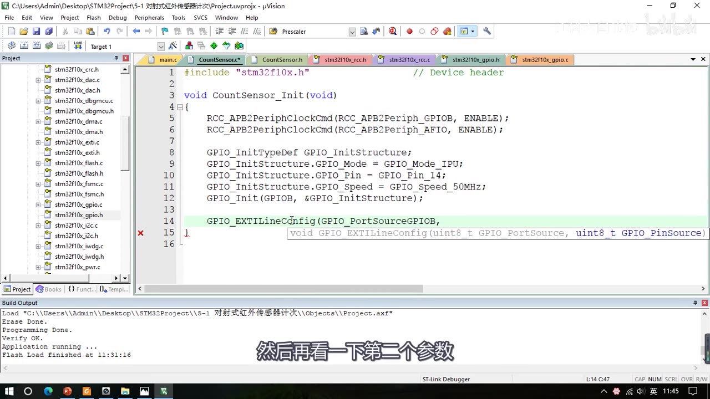
图 4：AFIO 配置——GPIO_EXTILineConfig(GPIO_PortSourceGPIOB, GPIO_PinSource14)，把 PB14 选为 EXTI 第 14 号线
2.4 第四步：EXTI 配置触发方式与响应方式
先看 exti.h 里的库函数：EXTI_DeInit（复位）、EXTI_Init（按结构体初始化）、EXTI_StructInit（结构体赋默认值）、EXTI_GenerateSWInterrupt（软件触发一次外部中断），以及读写标志位的 4 个函数：
| 函数 | 使用场景 |
|---|---|
EXTI_GetFlagStatus / EXTI_ClearFlag |
在主程序里查看/清除标志位 |
EXTI_GetITStatus / EXTI_ClearITPendingBit |
在中断函数里查看/清除中断标志位 |
两组函数本质上都是读写状态寄存器，区别是下面两个函数只读写与中断有关的标志位，并且会判断中断是否允许；建议主程序用上面两个、中断函数用下面两个（当然在中断里用上面两个也没问题）。
初始化 EXTI 用 EXTI_Init，只有一个参数——EXTI 初始化结构体的地址（EXTI 只有一个，不用像 GPIO 那样先指定外设）：
EXTI_InitTypeDef EXTI_InitStructure;
EXTI_InitStructure.EXTI_Line = EXTI_Line14; // 第 14 号中断线
EXTI_InitStructure.EXTI_LineCmd = ENABLE; // 开启中断线
EXTI_InitStructure.EXTI_Mode = EXTI_Mode_Interrupt; // 中断模式（另有事件模式）
EXTI_InitStructure.EXTI_Trigger = EXTI_Trigger_Falling; // 下降沿触发
EXTI_Init(&EXTI_InitStructure);
EXTI_Line可以是EXTI_Lines的任意组合（EXTI_Line0～EXTI_Line15，也可以用按位或同时选多条）；EXTI_Mode是枚举EXTIMode_TypeDef：中断模式 / 事件模式；EXTI_Trigger是枚举EXTITrigger_TypeDef：EXTI_Trigger_Rising（上升沿）、EXTI_Trigger_Falling（下降沿）、EXTI_Trigger_Rising_Falling（双边沿），按实际需求选；- 视频里还指出库函数的一个小疏忽：
EXTI_Trigger的注释里把类型写成了EXTI_Mode_TypeDef，实际应该是EXTITrigger_TypeDef。 - 配完后 PB14 的电平信号就能通过 EXTI 通向下一级 NVIC。
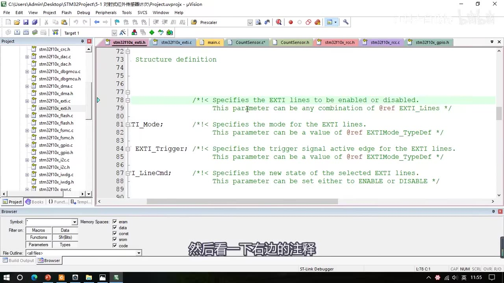
图 5：EXTI_InitTypeDef 结构体的四个成员（EXTI_Line / EXTI_Mode / EXTI_Trigger / EXTI_LineCmd）及右侧注释（左侧被代码窗口裁掉一部分）
2.5 第五步：NVIC 配置优先级
NVIC 的库函数在 misc.h 里：NVIC_PriorityGroupConfig（中断分组）、NVIC_Init（按结构体初始化通道），另外还有 NVIC_SetVectorTable、NVIC_SystemLPConfig 两个用得少的函数（可以先不看）。
NVIC_PriorityGroupConfig(NVIC_PriorityGroup_2); // 2 位抢占优先级 + 2 位响应优先级
NVIC_InitTypeDef NVIC_InitStructure;
NVIC_InitStructure.NVIC_IRQChannel = EXTI15_10_IRQn; // EXTI10~15 共用这个中断通道
NVIC_InitStructure.NVIC_IRQChannelCmd = ENABLE; // 使能
NVIC_InitStructure.NVIC_IRQChannelPreemptionPriority = 1; // 抢占优先级
NVIC_InitStructure.NVIC_IRQChannelSubPriority = 1; // 响应优先级
NVIC_Init(&NVIC_InitStructure);
- 中断不多、很难产生中断冲突时，优先级分组比较随意，视频里选了分组 2（2 位抢占 + 2 位响应，比较平均）；先占优先级 = 抢占优先级、从占优先级 = 响应优先级（视频原话）。
- 分组方式整个芯片只能用一种，所以这段代码整个工程只需要执行一次（可以放在主函数最前面；本集直接放在模块的初始化函数里）。
NVIC_IRQChannel取值在库函数注释里看不到，要到stm32f10x.h的IRQn_Type里找（搜索范围要换成「当前工程」），并按芯片容量展开对应的条件编译（本课芯片是 MD 中等密度）。STM32 的 EXTI10～EXTI15 合并到了EXTI15_10_IRQn一个通道里。- 分组 2 下抢占优先级和响应优先级的取值范围都是 0～3；本程序只有一个中断，抢占、响应都设为 1 即可（优先级只在多个中断源同时申请、产生拥挤时才有作用）。
- 到这里外部中断的信号就从 GPIO → AFIO → EXTI → NVIC → CPU 打通了。
2.6 中断服务函数
- STM32 的中断函数名字都是固定的，每个中断通道对应一个中断函数，名字可以参考启动文件（
startup_stm32f10x_md.s）里的中断向量表——以IRQHandler结尾的字符串就是中断函数名；找到EXTI15_10_IRQHandler复制过来。 - 中断函数格式：
void开头、参数void、无参无返回值；名字写错就进不了中断，最好直接从启动文件复制。中断函数不需要在头文件里声明，因为它不需要调用、是自动执行的。 - 中断函数里一般先判断中断标志位：
EXTI15_10_IRQHandler是 EXTI10～EXTI15 共用的，要先确认是不是 EXTI14 触发进来的；中断结束后必须清除中断标志位，否则标志位一直为 1 会不断申请中断，程序就卡死在中断函数里了。
void EXTI15_10_IRQHandler(void)
{
if (EXTI_GetITStatus(EXTI_Line14) == SET) // 确认是 EXTI14 触发的
{
CountSensor_Count++; // 中断程序：计数 +1
EXTI_ClearITPendingBit(EXTI_Line14); // 清除中断标志位
}
}
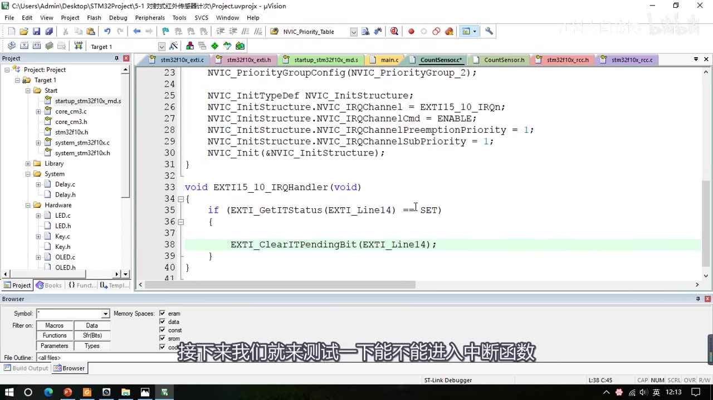
图 6：NVIC 配置（NVIC_PriorityGroup_2、EXTI15_10_IRQn、抢占/响应优先级均为 1）与 EXTI15_10_IRQHandler 中断函数
- 写好模块后先编译一下，再去 main.c 调用，否则代码提示可能显示不出新写的函数。
- 验证：进调试模式，在中断函数里打断点再全速运行，用挡光片挡一下传感器，程序成功停在断点处（图 7）——说明中断配置和触发都没问题。
- 提示：在
main.c里#include "CountSensor.h"，主循环前调用CountSensor_Init()。
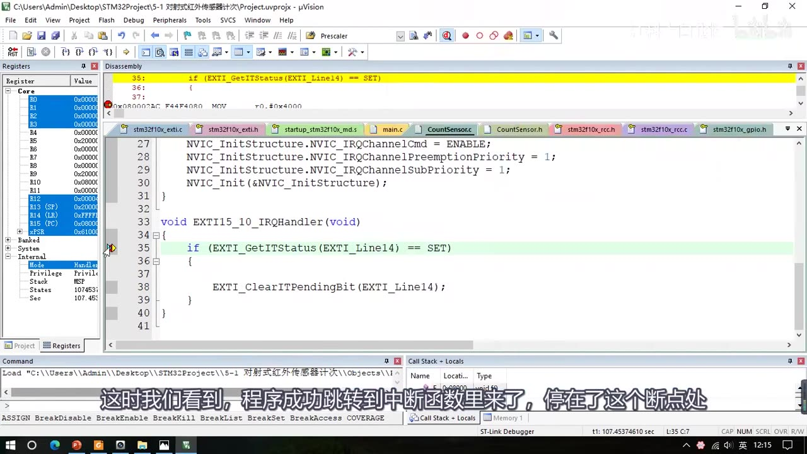
图 7：调试模式在中断函数里打断点，挡一下传感器，程序成功跳转到中断函数并停在断点处
本节用到的库函数一览：
| 库函数 | 所属文件 | 作用 |
|---|---|---|
RCC_APB2PeriphClockCmd |
rcc.h |
开启 GPIOB、AFIO 时钟 |
GPIO_Init |
gpio.h |
GPIO 配置为上拉输入 |
GPIO_EXTILineConfig |
gpio.h（AFIO 函数） |
选择 GPIO 作为外部中断线 |
EXTI_Init |
exti.h |
配置中断线、模式、触发边沿、使能 |
EXTI_GetITStatus |
exti.h |
中断函数里判断中断标志位 |
EXTI_ClearITPendingBit |
exti.h |
中断函数里清除中断挂起标志位 |
NVIC_PriorityGroupConfig |
misc.h |
设置中断优先级分组 |
NVIC_Init |
misc.h |
配置中断通道与优先级并使能 |
GPIO_ReadInputDataBit |
gpio.h |
编码器中断里读另一相电平 |
OLED_ShowString / OLED_ShowNum / OLED_ShowSignedNum |
OLED.h |
显示字符串 / 无符号数 / 带符号数 |
3. 工程 1 的计次与显示
计数变量定义在模块上面（全局变量）：uint16_t CountSensor_Count;（只加不减，用无符号 16 位即可），中断里 CountSensor_Count++，再写一个 Get 函数把值返回：
uint16_t CountSensor_Get(void)
{
return CountSensor_Count;
}
main.c 里用 OLED 显示：
#include "OLED.h"
#include "CountSensor.h"
int main(void)
{
OLED_Init();
CountSensor_Init();
OLED_ShowString(1, 1, "Count:"); // 1 行 1 列显示 "Count:"
while (1)
{
OLED_ShowNum(1, 7, CountSensor_Get(), 5); // 1 行 7 列显示 5 位数字
}
}
现象：OLED 显示 Count:00000；挡一下传感器数字加 1，再挡一下再加 1。
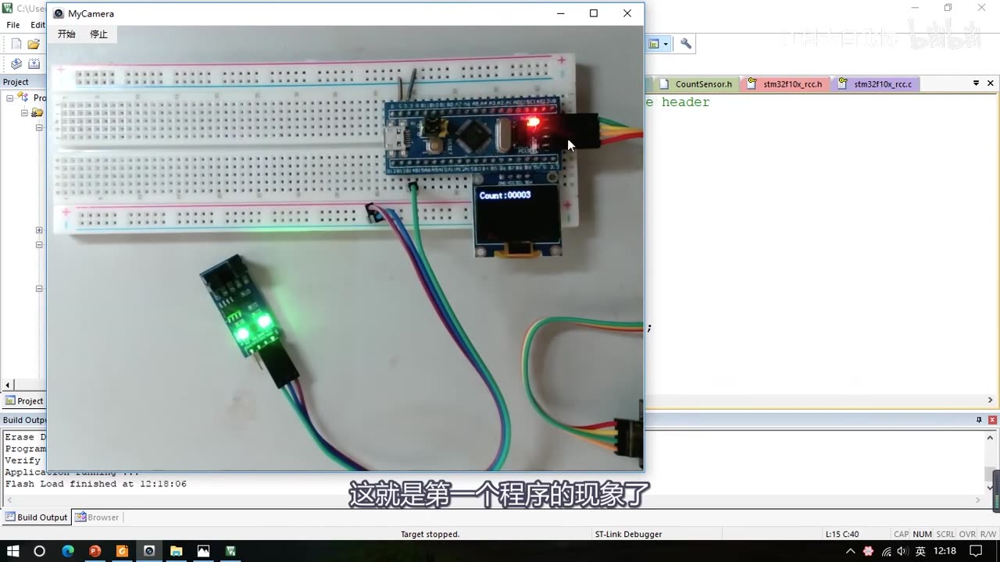
图 8：工程 1 现象——面包板接线，OLED 显示 Count:00003（挡光片经过 3 次后的计数）
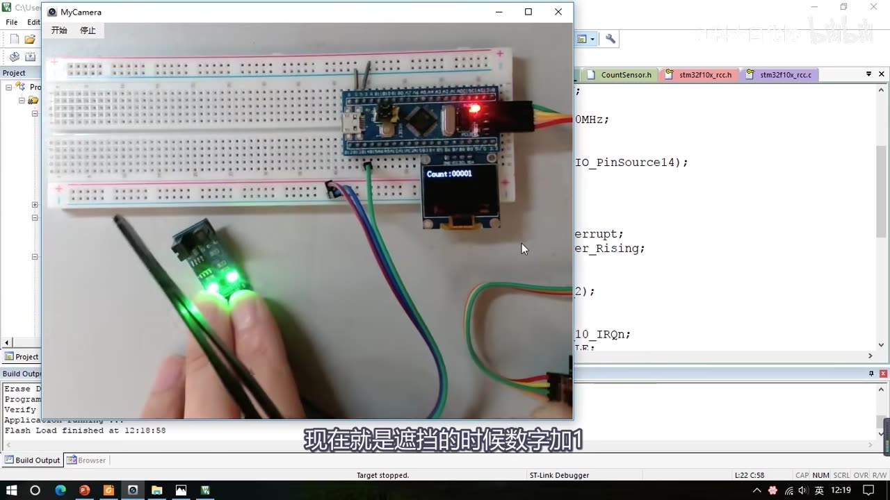
图 9：遮挡传感器槽口时数字加 1（画面 Count:00001，此时已改为上升沿触发）
触发方式与计数时刻（视频里改了 EXTI_Trigger 演示）：
EXTI_Trigger_Falling（下降沿）：移开挡光片时触发中断 → 移开时加 1；EXTI_Trigger_Rising（上升沿）：遮挡时触发中断 → 遮挡时加 1；EXTI_Trigger_Rising_Falling（双边沿）：遮挡和移开时都加 1。
4. 工程 2：旋转编码器计次
4.1 接线
右边还是 OLED 的电路；左边插一个旋转编码器模块，VCC/GND 接电源正负极，下面两个引脚是 A、B 相输出，分别接到 STM32 的 PB0（A 相）和 PB1（B 相）。
实物接线时，因为模块引脚间距不是标准距离，要稍微别一下引脚才能插到面包板上；然后用面包板跳线接电源（VCC 正、GND 负），A、B 两相用面包板飞线分别接 PB0、PB1。
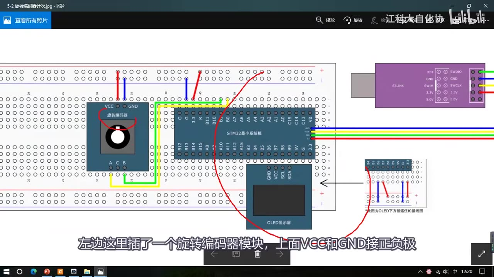
图 10：5-2 旋转编码器计次接线图——编码器模块 VCC/GND 接电源，A、B 相输出接 PB0、PB1
4.2 AB 相原理与方向判断
旋转编码器转动时，A、B 两相输出的是相位差 90° 的方波（正交信号）：正向旋转时 A 相先出现下降沿，反向旋转时 A 相后出现下降沿。
- 最简单的做法：只把一相的下降沿用作中断触发，在中断时刻读取另一相的电平——正转时读到高电平、反转时读到低电平，这样就能区分旋转方向。
- 但这样在操作上有一点小瑕疵：正转时 A 相先出现下降沿，刚开始动就进中断；而反转是 A 相后出现下降沿，要转到位了才进中断。
- 所以本集采用的方案是：A、B 两相都触发中断——
- B 相下降沿（EXTI1）且 A 相为低电平 → 判断为正转，
Encoder_Count++； - A 相下降沿（EXTI0）且 B 相为低电平 → 判断为反转，
Encoder_Count--。
- B 相下降沿（EXTI1）且 A 相为低电平 → 判断为正转，
- 这样正转、反转都是转到位了才执行数字加减，也顺便演示了两个中断的初始化代码。
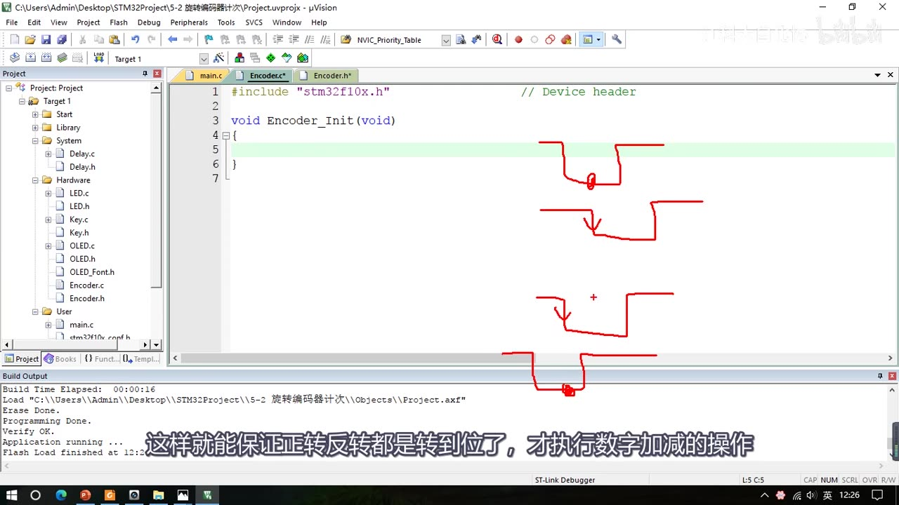
图 11：编码器的判断方案（手绘波形）——A、B 两相都触发中断，靠「哪一相先下降沿 + 另一相电平」判断正反转，保证转到位才加减
4.3 Encoder_Init：两个中断通道的配置
做法是把上一个工程的初始化部分复制过来再改：
- RCC 时钟（GPIOB、AFIO）不用改；
- GPIO 改为
GPIO_Pin_0 | GPIO_Pin_1（两个引脚可以按位或一起配置）； - AFIO 配置写两行：
GPIO_EXTILineConfig(GPIO_PortSourceGPIOB, GPIO_PinSource0);和GPIO_EXTILineConfig(GPIO_PortSourceGPIOB, GPIO_PinSource1); - EXTI 的
EXTI_Line = EXTI_Line0 | EXTI_Line1，模式和触发方式两条线相同（中断模式、下降沿），所以一次 EXTI_Init 就能同时配置两条线； - NVIC 分组不变（
NVIC_PriorityGroup_2），但两个通道要分别设置优先级：EXTI0_IRQn抢占 1、响应 1；EXTI1_IRQn抢占 1、响应 2（结构体变量可以重复使用，不用重新定义）。
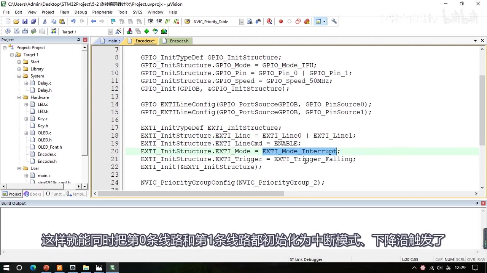
图 12：Encoder_Init 的 EXTI 部分——GPIO_Pin_0 | GPIO_Pin_1、两行 GPIO_EXTILineConfig、EXTI_Line0 | EXTI_Line1
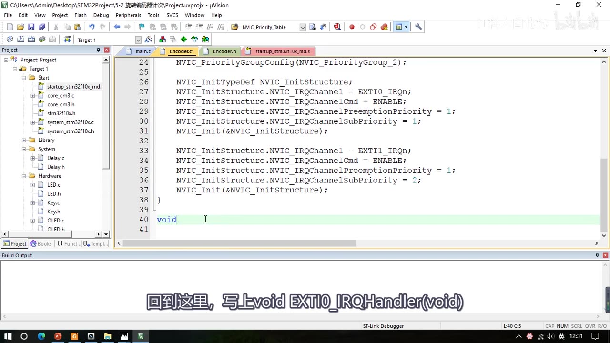
图 13：Encoder_Init 的 NVIC 部分——EXTI0_IRQn（抢占 1/响应 1）与 EXTI1_IRQn（抢占 1/响应 2）分别初始化
4.4 两个中断函数与方向判断
EXTI0 和 EXTI1 各自独占一个中断函数，仍按固定格式：先判断标志位、执行程序、最后清标志位。
void EXTI0_IRQHandler(void) // A 相（PB0）下降沿
{
if (EXTI_GetITStatus(EXTI_Line0) == SET)
{
if (GPIO_ReadInputDataBit(GPIOB, GPIO_Pin_1) == 0) // 读 B 相电平
{
Encoder_Count--; // B 相为低 → 反转
}
EXTI_ClearITPendingBit(EXTI_Line0);
}
}
void EXTI1_IRQHandler(void) // B 相（PB1）下降沿
{
if (EXTI_GetITStatus(EXTI_Line1) == SET)
{
if (GPIO_ReadInputDataBit(GPIOB, GPIO_Pin_0) == 0) // 读 A 相电平
{
Encoder_Count++; // A 相为低 → 正转
}
EXTI_ClearITPendingBit(EXTI_Line1);
}
}
- 注意：视频里写这段代码时手误，EXTI0 里一开始读的是
GPIO_Pin_0（A 相自己），后来改成GPIO_Pin_1（B 相）才正确（见「坑与易错点」第 8 条）。 - 如果用的是
EXTI9_5、EXTI15_10这类共用通道的中断，只能写一个中断函数，把两个判断并列放在同一个函数里即可。 - 计数变量用带符号的
int16_t Encoder_Count;，因为要正转加、反转减。
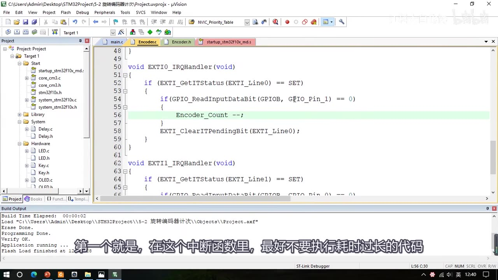
图 14：两个中断函数与方向判断（修正后）——EXTI0 里读 B 相 PB1 为低则减 1（画面下半部分为 EXTI1_IRQHandler 开头）
4.5 Encoder_Get 与 main
为了让 main 能"取走"中断里的计数值，再写一个 Encoder_Get 函数：它返回调用间隔内的增量，并且返回后把计数值清 0。因为 return 之后函数就结束了、没法再清零，所以先用一个临时变量 Temp 暂存：
int16_t Encoder_Get(void)
{
int16_t Temp;
Temp = Encoder_Count;
Encoder_Count = 0;
return Temp;
}
main.c 里用变量 Num 累加这个增量，再用 OLED 显示：
#include "OLED.h"
#include "Encoder.h"
int16_t Num;
int main(void)
{
OLED_Init();
Encoder_Init();
OLED_ShowString(1, 1, "Num:"); // 1 行 1 列显示 "Num:"
while (1)
{
Num += Encoder_Get(); // 累加本次增量
OLED_ShowSignedNum(1, 5, Num, 5); // 1 行 5 列显示带符号数，长度 5
}
}
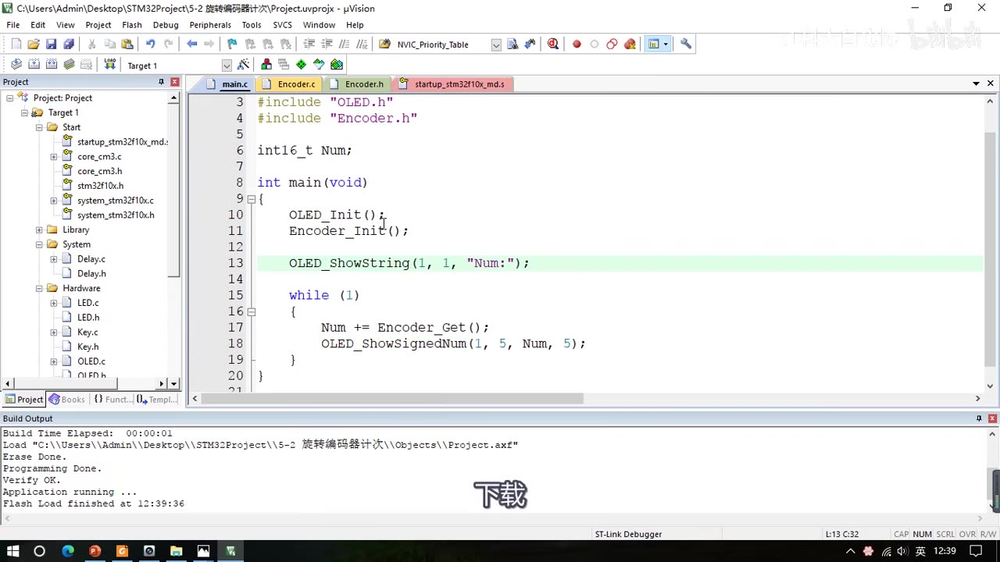
图 15：main.c——OLED_ShowString(1,1,"Num:")、Num += Encoder_Get()、OLED_ShowSignedNum(1,5,Num,5)
4.6 现象与修正
- 下载后转动编码器，方向判断不对：视频里判断"这个问题应该是中断里判断搞错了"，画面上 OLED 甚至显示出了负数
Num:-00013。 - 排查：
EXTI0_IRQHandler（A 相中断）里应该判断另一个引脚——A 相下降沿时读 A 相自己的电平（GPIO_Pin_0）恒为 0、条件恒成立，等于 A 相中断固定执行减 1；改成读 B 相的GPIO_Pin_1才对。 - 修正后重新编译下载：向右转数字增加、向左转数字减小，现象正确（画面
Num:+00012）。
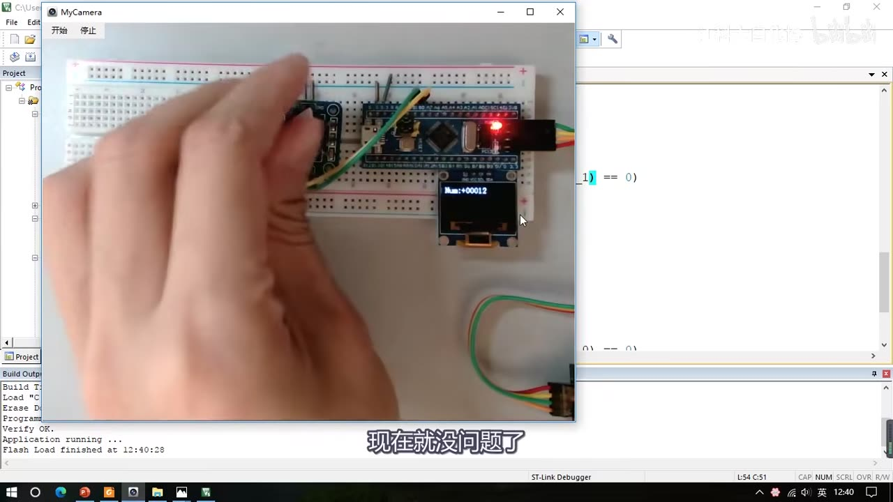
图 16：修正后的现象——转动编码器，OLED 显示 Num:+00012，方向增减正常
5. 中断编程建议（视频结尾）
- 中断函数里最好不要执行耗时过长的代码：中断函数要简短快速，别刚进中断就
Delay多少毫秒。中断处理的是突发的事情，为了一个突发事件待在中断里不出来，主程序会受到严重阻塞。 - 最好不要在中断函数和主函数里调用相同的函数或操作同一个硬件，尤其是硬件相关的函数（比如 OLED 显示函数）：
- 主程序里 OLED 刚显示一半，啪一下进中断，中断里又调用 OLED 显示函数，OLED 的显示位置就被挪到别处了；
- 中断结束后要回到主程序继续原来的显示，但硬件的显示位置已经变了，继续显示的内容就会跟着跑到其它地方去；
- 中断进入和退出时的保护现场/恢复现场只保证 CPU 程序能正常返回，对外部硬件并没有做现场保护。
- 所以正确做法是：中断里只操作变量或标志位，显示和具体操作放到主循环里做——既能保证中断短小快速，又能避免硬件操作冲突。
- 更广义地说，多用变量、标志位或函数作为接口，减少代码之间的耦合性，让各部分代码相互独立，程序会更清晰、更强健。
坑与易错点
- 中断函数名必须与启动文件一致：
EXTI15_10_IRQHandler、EXTI0_IRQHandler、EXTI1_IRQHandler，写错一个字母就进不了中断；最好直接从启动文件startup_stm32f10x_md.s复制。 - 中断结束必须清标志位：
EXTI_ClearITPendingBit(EXTI_LineX)，否则标志位一直为 1 会反复申请中断，程序卡死在中断里。 - 优先级分组全芯片只能用一种：
NVIC_PriorityGroupConfig整个工程只需执行一次（可放 main 开头，也可放模块 Init 里）。 - EXTI / NVIC 不需要开时钟：GPIOB、AFIO 要开（APB2）；EXTI 没有时钟控制位、NVIC 是内核外设，两者都不需要开启时钟。
- RCC 的总线参数要和函数对应：GPIOB、AFIO 是 APB2 外设，用
RCC_APB2PeriphClockCmd+RCC_APB2Periph_*；写成 APB1/AHB 语法不报错但外设不工作。 - 触发方式决定计数时刻：下降沿 = 移开挡光片加 1；上升沿 = 遮挡加 1；双边沿 = 遮挡和移开都加 1。
- EXTI10～EXTI15 共用一个中断通道（
EXTI15_10_IRQn/EXTI15_10_IRQHandler），中断里必须先EXTI_GetITStatus判断是哪条线；而 EXTI0、EXTI1 各自独占一个中断函数。 - 编码器方向异常的教训：
EXTI0_IRQHandler里要读另一相的电平（B 相GPIO_Pin_1），误读成自己这相（GPIO_Pin_0）时，A 相下降沿读自己恒为 0、条件恒成立，方向判断就错了。 - 计数变量类型要选对：只加不减（红外计次）用
uint16_t；有正反转（编码器）用带符号的int16_t。 - 中断里不延时、不操作同一硬件（见第 5 节），用变量/标志位在主循环里显示和操作。
- 模块写好后先编译：否则回 main.c 调用时，代码提示可能显示不出新写的函数；中断函数不需要在头文件声明。
时间轴
| 时间 | 内容 |
|---|---|
| 0:00 | 本小节写外部中断的代码，先看接线图 |
| 0:09 | 打开 5-1 对射式红外传感器计次 接线图：右上角 OLED 电路同上一节，左下角接对射式红外传感器模块 |
| 0:32 | 接线：VCC/GND 接电源，DO 数字输出随意选 GPIO（这里接 PB14） |
| 0:42 | 挡光片经过槽口 → DO 电平跳变 → 触发 PB14 外部中断 → 中断里变量 ++，主循环 OLED 显示 |
| 1:14 | 实物接线：3 根公对母杜邦线，VCC 正、GND 负、DO 接 PB14 |
| 1:36 | 用挡光片挡一下槽口，模块输出指示灯跟随亮灭 |
| 1:52 | 复制 OLED 工程改名 5-1 对射式红外传感器计次，先留一个显示 HelloWorld 的代码测试 |
| 2:48 | 在 Hardware 下新建 CountSensor.c / CountSensor.h 模块 |
| 3:44 | 写 CountSensor_Init，开始配置外部中断 |
| 4:07 | 看 PPT「EXTI 基本结构」图，总结出配置五步 |
| 5:32 | 第一步 RCC 开时钟：GPIOB、AFIO（都是 APB2） |
| 7:14 | EXTI、NVIC 不需要开启时钟的原因（NVIC 是内核外设） |
| 8:07 | 第二步 GPIO：外部中断引脚选浮空/上拉/下拉，本集用 GPIO_Mode_IPU、GPIO_Pin_14 |
| 10:03 | 第三步 AFIO：GPIO_EXTILineConfig(GPIO_PortSourceGPIOB, GPIO_PinSource14) |
| 13:57 | 第四步 EXTI：看 exti.h 的库函数（Init/DeInit/StructInit/GenerateSWInterrupt/GetITStatus/ClearITPendingBit） |
| 18:04 | 写 EXTI_Init：EXTI_Line14、EXTI_LineCmd = ENABLE、EXTI_Mode_Interrupt |
| 21:23 | 触发方式：EXTI_Trigger_Rising / Falling / Rising_Falling 按需选（EXTI_Trigger_Falling 在此选出）；指出 Trigger 注释里的类型笔误 |
| 22:08 | 第五步 NVIC：看 misc.h 的 NVIC_PriorityGroupConfig 和 NVIC_Init |
| 24:02 | 选 NVIC_PriorityGroup_2（2 位抢占 + 2 位响应）；分组全芯片唯一，整个工程只需一次 |
| 24:40 | NVIC_Init：EXTI15_10_IRQn、使能、抢占 1、响应 1（EXTI10～15 合并到一个通道） |
| 28:34 | 到启动文件里找中断函数名 EXTI15_10_IRQHandler，写中断函数 |
| 29:34 | 中断里先用 EXTI_GetITStatus 判断，结束用 EXTI_ClearITPendingBit 清标志 |
| 31:16 | 编译后进调试模式，在中断函数打断点，挡一下传感器验证能进中断 |
| 32:47 | 定义 uint16_t CountSensor_Count，中断里 ++，写 CountSensor_Get 返回计数 |
| 33:47 | main.c：OLED_ShowString(1,1,"Count:") + OLED_ShowNum(1,7,CountSensor_Get(),5) |
| 34:17 | 现象：OLED 显示 Count:00000，挡一下传感器加 1 |
| 34:31 | 下降沿触发：在移开挡光片的时候触发中断（移开时加 1） |
| 34:52 | 现在就是遮挡的时候数字加 1（此时已改为上升沿触发） |
| 34:58 | 如果这里改成上升沿、下降沿都触发 |
| 35:10 | 遮挡和移开的时候都加 1 |
| 35:23 | 第一个程序结束，开始第二个程序，看 5-2 旋转编码器计次 接线图：A 相接 PB0、B 相接 PB1 |
| 35:55 | 面包板接编码器模块：VCC/GND 接电源，A、B 相飞线接 PB0、PB1 |
| 36:51 | 复制工程改名 5-2 旋转编码器计次，新建 Encoder.c / Encoder.h |
| 38:42 | 编码器原理：正转/反转的 AB 相波形；只触发一相、读另一相电平可判方向，但有"正转刚动就进中断、反转转到位才进"的小瑕疵 |
| 39:25 | 改用方案：A、B 两相都触发中断；B 相下降沿且 A 低 = 正转，A 相下降沿且 B 低 = 反转 |
| 39:48 | 复制上个工程的初始化代码修改：GPIO_Pin_0 | GPIO_Pin_1、GPIO_PinSource0/1、EXTI_Line0 | EXTI_Line1 |
| 41:12 | NVIC 分别配置两个通道：EXTI0_IRQn（抢占 1/响应 1）、EXTI1_IRQn（抢占 1/响应 2） |
| 41:42 | 写两个中断函数 EXTI0_IRQHandler / EXTI1_IRQHandler |
| 43:16 | 定义 int16_t Encoder_Count，在中断里判断另一相电平决定 ++ / -- |
| 44:24 | 写 Encoder_Get：Temp 暂存后清 0，返回调用间隔内的增量 |
| 45:21 | main.c：Num += Encoder_Get()、OLED_ShowSignedNum(1,5,Num,5) |
| 46:32 | 现象：转动编码器发现方向不对（画面 OLED 出现负数 Num:-00013），判断是中断里判断错了 |
| 46:49 | 修正：EXTI0_IRQHandler 里应判断 GPIO_Pin_1（B 相），原来是 GPIO_Pin_0 |
| 47:06 | 修正后现象：向右转数字增加，向左转数字减小 |
| 47:13 | 中断编程建议：中断要短不延时；中断和主程序不要操作同一硬件；用变量/标志位解耦 |
| 49:24 | 结束语 |
存疑
- 本集文本来自画面硬字幕的 OCR（PP-OCRv4，source=subtitle-ocr），不是 ASR；705 段中约 35 行是噪声（如
Flash Load finished at ...、Application running ...、Parameters Types、Objects\Project.axf - 0 Error(s), 0 Warning(s).等编译输出），已剔除、未当作台词。 - 典型 OCR 错字（本集实际出现，已按画面校正）：
EXTL/EXT1/EXT_→EXTI；INVIC→NVIC；GPIOModeIPU→GPIO_Mode_IPU；GPIOPin14→GPIO_Pin_14；GPIOEXTILinConfig→GPIO_EXTILineConfig；EXTILine14→EXTI_Line14；EXTI1510RQHandler→EXTI15_10_IRQHandler；uint16t/int16t→uint16_t/int16_t；GPIOPin_O→GPIO_Pin_0；自前→目前、册掉→删掉、外M设→外设等。 - 34:36 附近"变为上升沿触发"这句字幕被 Keil 编译输出干扰漏采（OCR 未采到），触发方式演示按画面（
EXTI_Trigger_Rising→Rising_Falling）与前后台词整理。 - 本集没有软件消抖 / 延时消抖的代码：本集没有软件消抖/延时消抖内容。与"避免误计数"有关的是：①编码器采用 A、B 两相都触发中断 + 读另一相电平判方向的时序设计（转到位才加减）；②中断函数不许放延时；③中断里只操作变量/标志位、OLED 显示放主循环（中断与主程序不操作同一硬件）。
- 本集代码块为按视频化简的写法（省略部分
#include、把短语句合并到一行、省略部分大括号），实际写法以画面为准；函数名、参数名、寄存器名按画面校正。 - 工程名、引脚（PB14；PB0/PB1）、OLED 显示格式按视频画面记录，实际接线和显示位置可按需求调整。